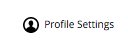

Subtask is a web based, responsive to-do list for those who want less clutter. The to-do list app allows you to take note of an unlimited amount of tasks, from either your phone or desktop computer. The simple interface allows you to keep track of what needs done without any unnecessary interface getting in the way. As soon as you submit your tasks, they are saved and ready for you to access them on any device you wish!
To use Subtask, just create an account on the
Subtaskpage then start making your list. To add tasks to your list, just type what you need to do into the text box and press enter. To edit the title of the task you can use the settings on the right side of the task or double click the title. Deleting tasks follows the same method as editing but click "Delete Task" instead.
Short answer; Yes. Subtask has been developed to be completely responsive and will be able to be accessed from a wide range of devices. As it uses Firebase to store data, it will also live update on your phone too. If you create a task using a desktop browser, it will appear instantly on the browser on your phone without refreshing the page.
In the near future, the features on the homepage will be implemented to Subtask to make it a more useful web app.
Log in to the Subtask page then click on the "Profile Settings" button
This will display your account settings where you can change your name, password and email address associated with your account.
Subtask is developed and maintained by
Jack. If you have any suggestions to improve the web app, get in touch by either
emailing meor send a tweet.
Cant find an answer to your question? Send a message to:
hello@subtask.coStart making lists now
Subtask